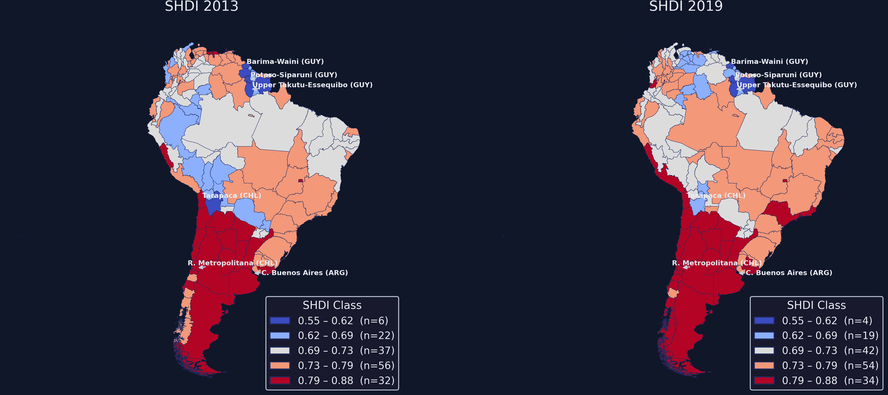
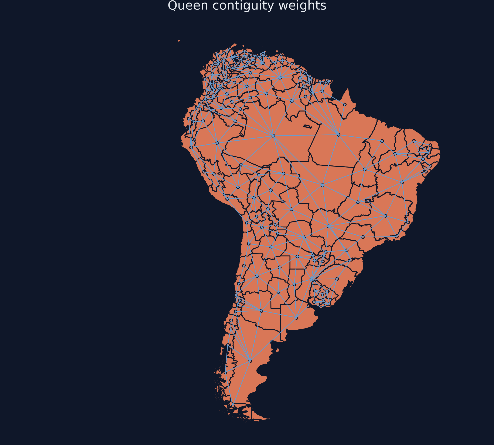
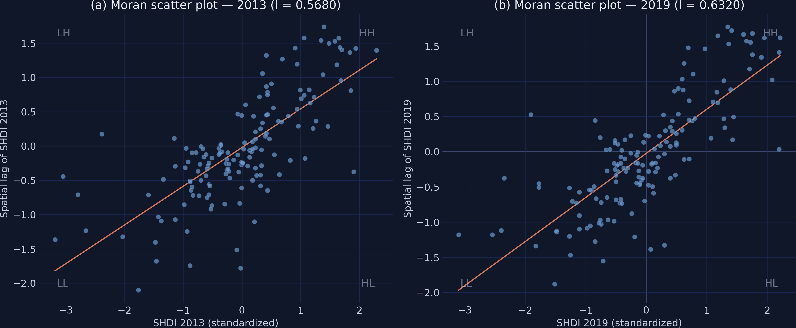
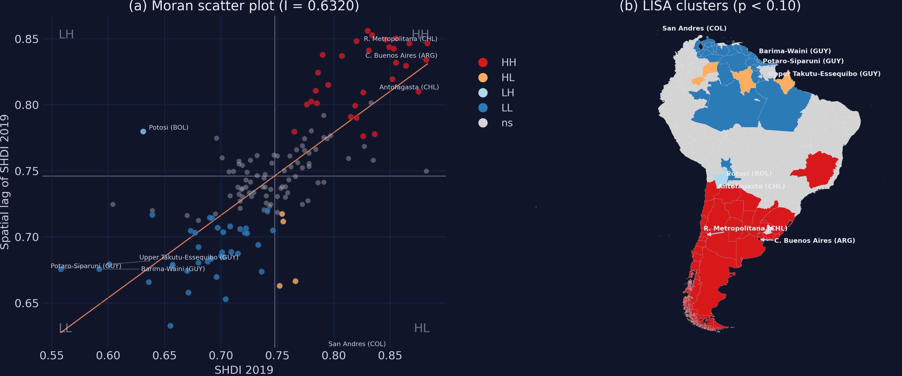
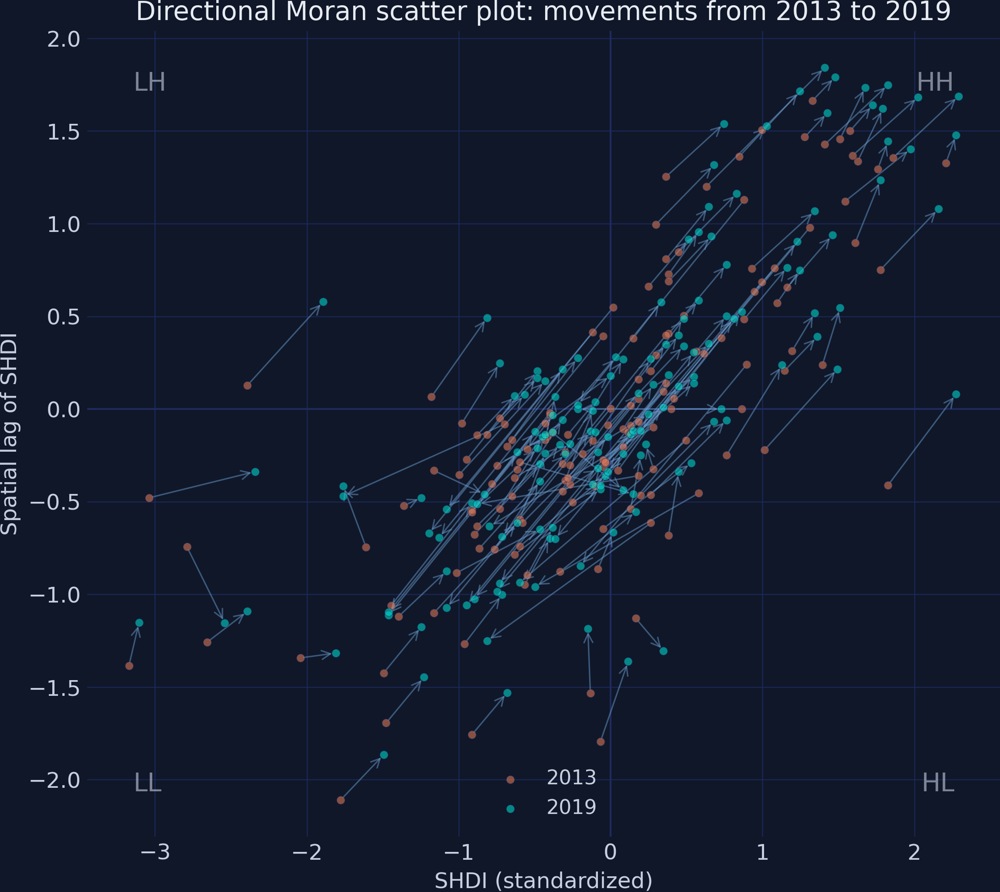
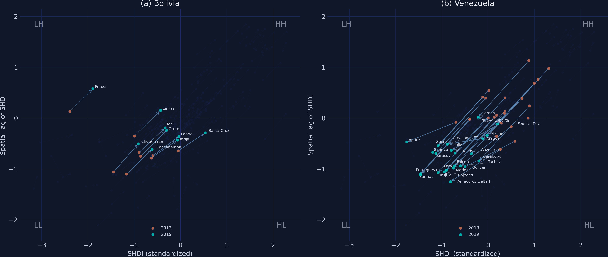

Spatial clusters and dynamics of human development in South America
Nagoya University (GSID)
June 11, 2026
Act I
Map human development across South America and a pattern jumps out: rich regions sit next to rich, poor next to poor.
But the eye is easily fooled. Is this clustering statistically significant, or could it arise by chance? And how does it move over time?

Subnational HDI in 2013 vs 2019, Fisher–Jenks classes held constant. The Southern Cone (red) and the Amazon–Guyana band (blue) read as spatial blocks, not scatter.
Act II
Source: Global Data Lab (Smits & Permanyer, 2019). Mean SHDI rose only \(+0.0053\) overall — yet income fell in 71 of 153 regions (46.4%). The aggregate calm hides spatial turbulence.
A spatial weights matrix \(W\) is an \(n \times n\) array whose entry \(w_{ij}\) encodes the link between regions \(i\) and \(j\) — \(w_{ij}>0\) if they are neighbours, \(0\) if not.
We use Queen — appropriate for irregular administrative borders. Then row-standardize (\(w_{ij}\to w_{ij}/\sum_j w_{ij}\)) so each row sums to 1.

Queen-contiguity network over South America: a line joins each region’s centroid to every neighbour’s. Dense in southern Brazil and northern Argentina; sparse in the Amazon.
\[I = \frac{n}{\sum_{i}\sum_{j} w_{ij}} \cdot \frac{\sum_{i}\sum_{j} w_{ij}(x_i-\bar{x})(x_j-\bar{x})}{\sum_{i}(x_i-\bar{x})^2}\]
For each pair of neighbours it multiplies their deviations from the mean. High-next-to-high (and low-next-to-low) makes the products positive — so \(I>0\) means clustering.
A permutation test reshuffles all SHDI values across regions 999 times — like dealing cards to random seats — and asks how often a random map beats the real one.
| Year | Moran’s \(I\) | \(p\) (perm.) | \(z\) |
|---|---|---|---|
| 2013 | 0.5680 | 0.0010 | 10.77 |
| 2019 | 0.6320 | 0.0010 | 11.99 |
Expected \(I\) under randomness \(= -0.0066\). The observed values are an order of magnitude away — and 2019 is higher than 2013.

Standardized SHDI (\(z_i\)) vs spatial lag (\(Wz_i\)), 2013 and 2019. The orange regression line’s slope equals \(I\); the steeper 2019 line shows the rise. Most points fall in the HH and LL quadrants.
The local Moran statistic decomposes the global \(I\) into one value per region:
\[I_i = z_i \sum_{j} w_{ij} z_j\]
Each region’s own standardized value \(z_i\) times the average of its neighbours’ — large and positive in a cluster’s core, negative for a spatial outlier.
Significance is permutation-based: only regions with \(p<0.10\) are coloured; the rest stay grey.

LISA for SHDI 2019: Moran scatter coloured by significant quadrant (left), cluster map (right). HH (red) clusters in the Southern Cone; LL (blue) across Guyana and the Amazon.
Prosperity clusters stable; deprivation cluster expanding by 8 regions. Asymmetric evolution — the signature of a localized crisis.
87%
of 2013 HH regions were still HH in 2019 (27 of 31) — while 17 non-significant regions fell into the LL cluster

Directional Moran scatter: an arrow from each region’s 2013 position to its 2019 position in (standardized value, spatial lag) space. Orange = 2013, teal = 2019.
Act III

Directional Moran scatter, Bolivia (left) vs Venezuela (right). Bolivia’s arrows are short and rightward; Venezuela’s are long, bundled, sweeping southwest into LL.
−0.065
mean SHDI change across Venezuela’s 24 regions; 21 of 24 ended in the LL quadrant (range a tight −0.067 to −0.064)
| Country | \(n\) | Mean change | Quadrant stability |
|---|---|---|---|
| Bolivia | 9 | +0.0333 | 7 of 9 stayed (78%) |
| Venezuela | 24 | −0.0653 | 3 of 24 stayed (12%) |
Bolivia’s arrows point right — own development improved — but its neighbours stayed poor, so it remained inside the LL cold spot.
Objection. “Spatial clustering proves neighbours cause each other’s development.”
Response. No. Moran’s I and LISA are descriptive — they measure spatial pattern, not mechanism. Clustering can come from genuine spillovers, from shared regional shocks, or from omitted common factors. ESDA flags where to look; identifying why needs a spatial regression and an identification strategy.